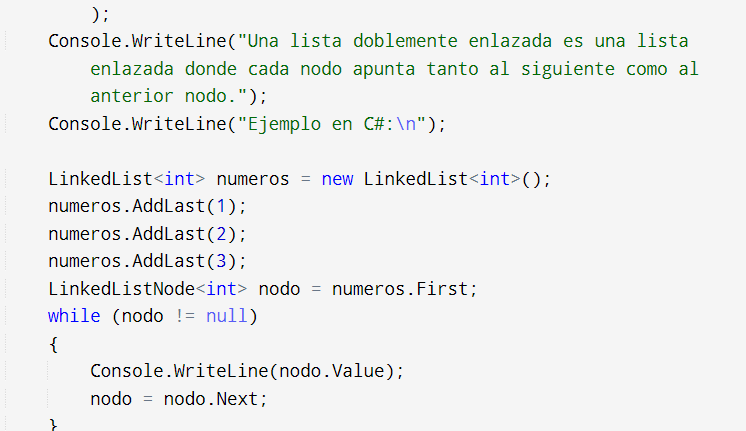

Concepto de lista enlazada doble
Una lista enlazada doble (o lista doblemente enlazada) es una estructura de datos dinámica que consiste en una secuencia de nodos, donde cada nodo contiene tres elementos:
Dato: La información que almacena el nodo.
Puntero al siguiente nodo: Una referencia al siguiente nodo en la secuencia.
Puntero al nodo anterior: Una referencia al nodo que precede al nodo actual en la secuencia
